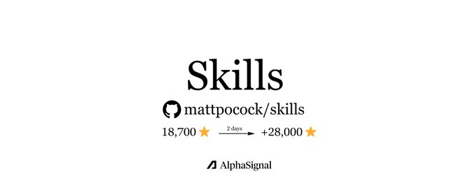

Spec-Driven Development is the New Default for AI Coding
Top 5 repos defining it, the academic case for why, and who says it's wrong.
In ~8 mins: what SDD is, why it became the default for AI coding, how the 5 leading repos implement it, and the one saying the whole category is wrong.
Spec-driven development crossed from blog-post topic to default architecture for AI coding in the last 12 months.
Thoughtworks, Martin Fowler, GitHub, Amazon, and a 67-source academic review all agreed in 2025 and 2026.
The question stopped being whether to use SDD and became which implementation.
What happened
Multiple independent sources converged on the same recommendation inside 18 months.
Thoughtworks listed spec-driven development in Technology Radar Vol. 32 as a technique worth adopting. Martin Fowler covered it on his site.
GitHub shipped Spec Kit, an MIT-licensed toolkit framed as the answer to vibe coding. Amazon launched Kiro, an agentic tool that walks users through requirements, design, and tasks before any code generation. Tessl launched at the radical end, with specs positioned as the new source code.
Red Hat published enterprise SDD guidance. InfoQ covered it at the architecture level.
Bryan Finster pushed back with the right critique. SDD is not a revolution, it's just BDD with branding.
That critique strengthens the case. The idea is not new. The context is.
BDD was an optional discipline that teams could adopt or ignore. With 84% of professional developers using or planning to use AI tools (Stack Overflow, 2025) and 46% of code output now AI-generated (GitHub, 2025), specification discipline became structurally necessary.
Why it became necessary
Four academic papers landed in 12 months, mapping the same problem from different angles.
Sabry Farrag at the University of East London ran a 67-source systematic review of the productivity paradox. AI coding tools deliver real individual-level gains and real system-level damage at the same time.
Peng et al. measured 55.8% faster completion in a 95-developer RCT. Becker et al.'s METR study found a 19% slowdown for experienced developers working on mature codebases.
DORA reported that 25% AI adoption correlates with a 7.2% drop in delivery stability. Faros AI tracked over 10,000 developers and saw 98% more merged PRs, 91% more review time, and 9% more bugs.
Shuvendu Lahiri at Microsoft Research named the underlying gap. AI-generated code is plausible by construction, not correct by construction. The semantic distance between what a user means and what a program does is the central reliability bottleneck.
An AIware 2026 vision paper named a second gap. Code review evaluates plausibility, not compliance. Most AI-generated changes pass tests, look reasonable, and still drift from the rules they were supposed to follow.
Deepak Babu Piskala wrote the practitioner manual that ties it together. He frames SDD across three rigor levels and a four-phase workflow.
Farrag's economic argument closes the loop. Code generated for a specific codebase has high asset specificity. LLMs introduce high behavioral uncertainty.
Developers invoke AI hundreds of times daily. In Transaction Cost Economics terms, that combination makes a written, executable contract the rational governance response. SDD is that contract.
How it actually works
SDD compresses to three things a practitioner needs to hold.
A four-phase workflow. Specify what the software should do. Plan how to build it. Implement in small, validated increments. Validate that the code meets the spec. Each phase produces an artifact that constrains the next.
Three rigor levels. Spec-first means a specification is written before coding but may drift after. Spec-anchored means the spec lives alongside the code and tests enforce alignment. Spec-as-source means the spec is the only artifact humans edit, with code regenerated rather than manually changed.
A governance spectrum. Farrag's paper ranks four mechanisms by constraint intensity:
- Post-hoc review is the loosest, where a developer reviews AI output after the fact.
- Natural-language specification is next, putting requirements before generation.
- Executable contract follows, with tests and structured spec documents the agent must satisfy.
- Constitutional governance is the tightest, a meta-specification of non-negotiable principles that every change must honor.
The higher the asset specificity, behavioral uncertainty, and frequency, the further up the spectrum the rational choice sits. Production code in a mature codebase invoked by AI hundreds of times daily lands at constitutional. A throwaway prototype lands at post-hoc.
The five SDD repos, by philosophy
Each repo encodes a different theory of where complexity belongs.
Full comparison table at the end. Links are in replies.
Spec Kit: constitution as authority
GitHub's official toolkit, MIT-licensed, Python CLI (specify init).
The theory of complexity: put it in the constitution. A non-negotiable principles file at .specify/memory/constitution.md sits above every spec and every implementation. The agent obeys it on every change, every session.
The workflow runs through nine slash commands:
- /speckit.constitution
- /speckit.specify
- /speckit.clarify
- /speckit.plan
- /speckit.tasks
- /speckit.taskstoissues
- /speckit.checklist
- /speckit.analyze
- /speckit.implement
The constitution and analyze steps are where the formal governance lives.
Farrag's paper evaluates Spec Kit as the direct instantiation of constitutional governance. The reported result: 12 hours to 15 minutes for upstream artifact production (PRD, design, structure, technical specs, test plans).
A pilot study saw late-stage hotfixes drop from 3-to-5 per sprint to 1-to-2, and rollbacks drop from 2-to-4 per month to 0-to-1.
30+ AI agent integrations including Claude, Codex, Copilot, Cursor, Gemini.
This is the only repo with explicit constitutional governance. The highest tier on Farrag's spectrum, and the steepest setup cost.
BMAD-METHOD: named agents as authority
BMad Code LLC, MIT, npm (npx bmad-method install). V6, with 34+ workflows.
The theory of complexity: put it in the roles. Six named personas, each with domain expertise:
- Analyst Mary handles brainstorming and research.
- PM John owns PRDs.
- Architect Winston runs the 8-step architecture workflow.
- Developer Amelia handles dev stories, sprint planning, and code review.
- UX Designer Sally owns interface decisions.
- Tech Writer Paige owns documentation.
Party Mode brings multiple personas into one session to argue from different professional perspectives.
The lifecycle has four phases: Analysis, Planning, Solutioning, Implementation. Each phase has its own workflows.
A .decision-log.md records every decision as an audit trail. An implementation-readiness gate (PASS, CONCERNS, or FAIL) blocks the move to code if anything is missing.
Planning depth auto-adjusts to project stakes. A hobby project gets a 2-page PRD. A launch project gets full specs. The bmad-help skill answers free-form questions about what to do next.
The module ecosystem extends the core with specialized domains: BMM (core), BMB (custom agents), TEA (test architecture), BMGD (game dev), CIS (creative intelligence).
This is the only repo that treats specifications as the inter-agent communication protocol of a multi-agent organization.
OpenSpec: change folders as the unit
Fission AI, MIT, npm (openspec init).
The theory of complexity: put it in the change. Each feature gets its own folder containing proposal.md (why this change), specs/ (requirements and scenarios), design.md (technical approach), and tasks.md (implementation checklist).
When the change ships, /opsx:archive folds the change spec into a growing source-of-truth document.
The core surface is three commands:
- /opsx:propose creates the change folder.
- /opsx:apply has the AI implement the task checklist.
- /opsx:archive closes it out.
An opt-in expanded profile adds six more: /opsx:new, /opsx:continue, /opsx:ff, /opsx:verify, /opsx:bulk-archive, /opsx:onboard.
The positioning is explicitly brownfield-first. Most SDD tools optimize for greenfield projects. OpenSpec is built to retrofit existing codebases. The delta-spec format (additions, modifications, removals tracked per change) is what makes that work.
Works with 25+ AI assistants via slash commands.
Executable contract at the lightest possible weight. No constitution, no named agents, no ceremony. The spec discipline survives without the process.
GSD: context as the bottleneck
TÂCHES, MIT, npm (npx get-shit-done-cc@latest). Built by a solo developer for solo developers.
The theory of complexity: put it in context engineering. The main session context stays at 30 to 40 percent. Heavy work runs in fresh subagent contexts, each getting a full 200K-token window.
The hypothesis the rest of the architecture rests on: as a session grows, AI output degrades, so the architecture should keep the session small.
The loop is six commands:
- /gsd-new-project runs questions, research, requirements, roadmap.
- /gsd-map-codebase does the same for existing code.
- /gsd-discuss-phase captures decisions before planning.
- /gsd-plan-phase runs research, plan, verify in a loop.
- /gsd-execute-phase dispatches parallel waves of subagents.
- /gsd-verify-work walks through what was built and diagnoses failures.
Five persistent state files survive session boundaries: PROJECT.md (vision), REQUIREMENTS.md (scope), ROADMAP.md (direction), STATE.md (current position), CONTEXT.md (per-phase decisions).
The .planning/config.json controls mode (interactive or yolo), model profiles (quality, balanced, budget), and quality-agent toggles. Package legitimacy checks are built into the install path.
Executable contract delivered through context discipline rather than process ceremony. The repo treats the context window as the bottleneck, not the methodology.
Superpowers: auto-triggering as discipline
Built by Jesse Vincent and Prime Radiant. MIT, zero-dependency plugin.
The theory of complexity: put it in the agent's behavior shaping. Skills auto-trigger at the right moments. No manual invocation. Mandatory workflows, not suggestions.
The using-superpowers skill loads at session start and is what makes auto-triggering work. Copying skill files alone is not a real integration.
Seven core skills run the workflow:
- brainstorming refines rough ideas before any code.
- using-git-worktrees isolates the workspace.
- writing-plans breaks work into 2 to 5 minute tasks with exact file paths and complete code.
- subagent-driven-development dispatches a fresh subagent per task with two-stage review (spec compliance, then code quality).
- test-driven-development deletes any code written before its test.
- requesting-code-review blocks critical issues.
- finishing-a-development-branch verifies tests and presents merge options.
The TDD enforcement is the unusual move. Most TDD tooling encourages the loop. Superpowers' skill deletes code that violates it.
Distributed through the official Claude plugin marketplace, the official Codex plugin marketplace, Factory Droid, Gemini extensions, Cursor, GitHub Copilot CLI, and OpenCode.
Executable contract enforced at the agent layer rather than the user layer. The user never has to remember to invoke the right skill.
The sixth repo, and the case against the category
Matt Pocock's Skills For Real Engineers sits on the same list of repos by accident. He argues against the category.
His talk Software Fundamentals Matter More Than Ever lands the thesis directly. "Code is not cheap. In fact, bad code is the most expensive it's ever been."
On the spec-driven movement specifically: "Specs to code, we are not investing in the design of the system. We are divesting from it."
His position rests on a software-engineering claim. Bad codebases have always been expensive because they resist change. AI accelerates that. A bad codebase compounded by AI throughput is the most expensive failure mode of the new era.
His repo is composable practices, not a workflow framework. Each skill stands alone:
- /grill-me runs a relentless interview to establish what Frederick Brooks calls a shared design concept.
- /grill-with-docs adds a Domain-Driven Design ubiquitous language file that humans and AI both reference.
- /tdd enforces red-green-refactor as the rate limiter on AI speed.
- /improve-codebase-architecture rebuilds shallow modules into deep modules, per John Ousterhout.
The default pattern is gray boxes: design the interface, delegate the implementation.
The data on his side: the METR finding that experienced developers on mature codebases were 19% slower with AI suggests the bottleneck is codebase quality, not specification quality. His argument is that the five SDD repos optimize for the wrong thing.


Skills For Real Engineering
A 21-skill prompt collection that encodes a real Claude Code workflow, what to install first and how.
Update 4/29: The repo crossed 37k! and major updates just shipped with a whole new readme file....
His repo went viral on the strength of /grill-me alone. The position is worth taking seriously.
The AlphaSignal take
The five SDD repos and Pocock's dissent are not answering the same question.
SDD optimizes for the plausibility-to-correctness gap. Pocock optimizes for the design-entropy gap. Both gaps are real. Both data sets support both positions.
A team that picks one and ignores the other is solving half the problem.
The reliability case for SDD is strongest at the constitutional and executable-contract levels. Spec Kit's constitution mechanism and BMAD's implementation-readiness gate are where the math actually pays off.
The case is weakest at the natural-language end, where SDD collapses into renamed prompt engineering.
Three things none of the six repos solve, drawn from the open problems sections of the four papers.
Oracle adequacy. Current evaluations collapse model quality, tool reliability, and harness quality into one end-task number. There is no metric for what a specification is actually worth.
Evidence bundles. Every accepted change should ship with a record of what was checked, what was not, and what risks remain. No current SDD tool produces this.
Self-evolving harnesses. The SDD frameworks themselves are software. They will change. None of them have a change-contract for their own evolution.
Read each of these repos as a specific theory of where reliability comes from. Pick the one whose theory matches the bottleneck you actually have. If you don't know your bottleneck, Pocock's critique applies first.
Which theory of reliability does your stack depend on, constitution, roles, change folders, context, auto-triggering, or design discipline?
All source links are in the first reply.
Full breakdown of recent updates + daily signals in our newsletter (link in bio).
Want to publish your own Article?
Upgrade to Premium